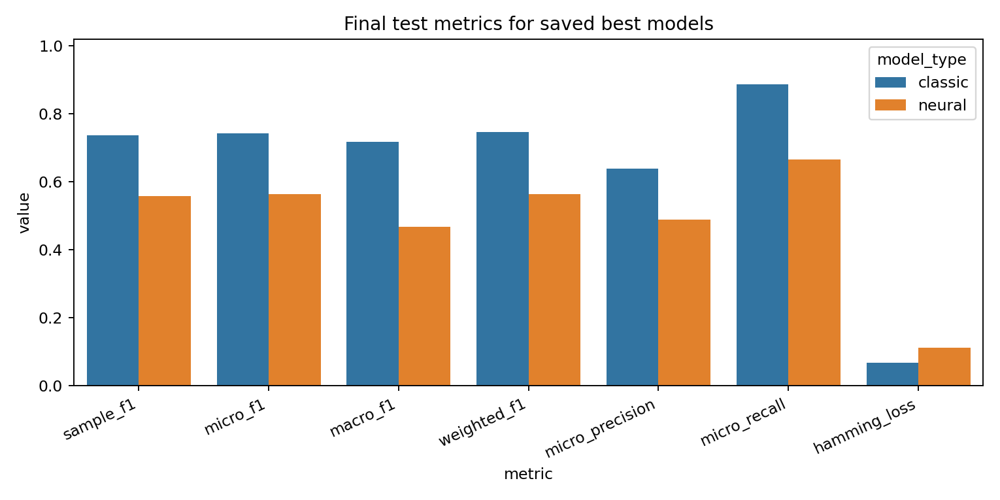
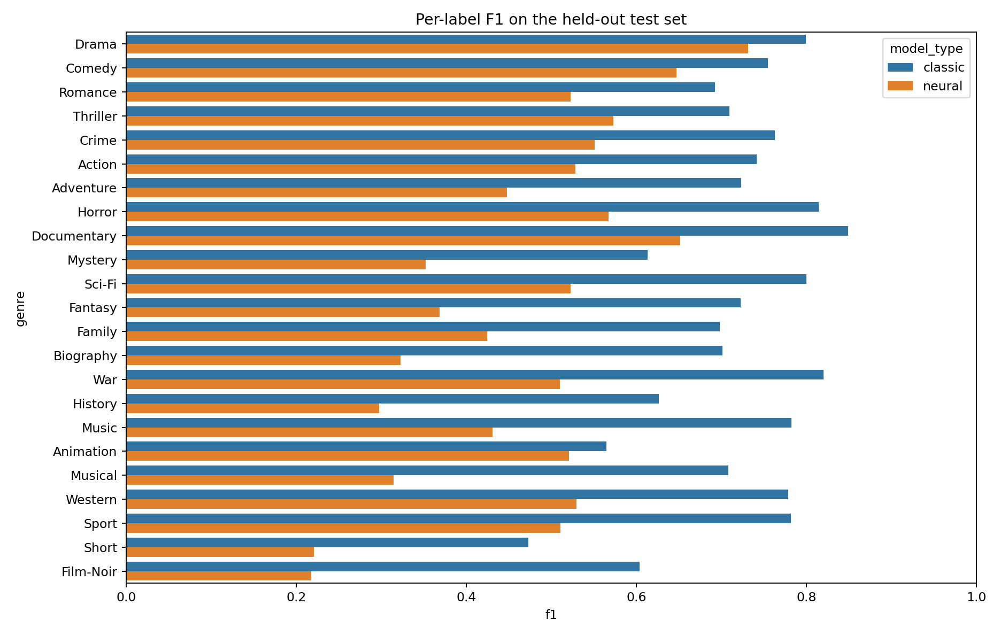
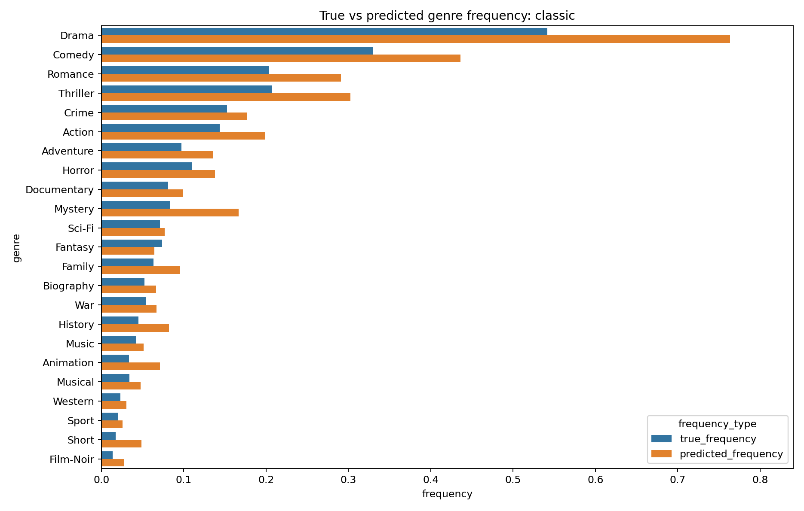
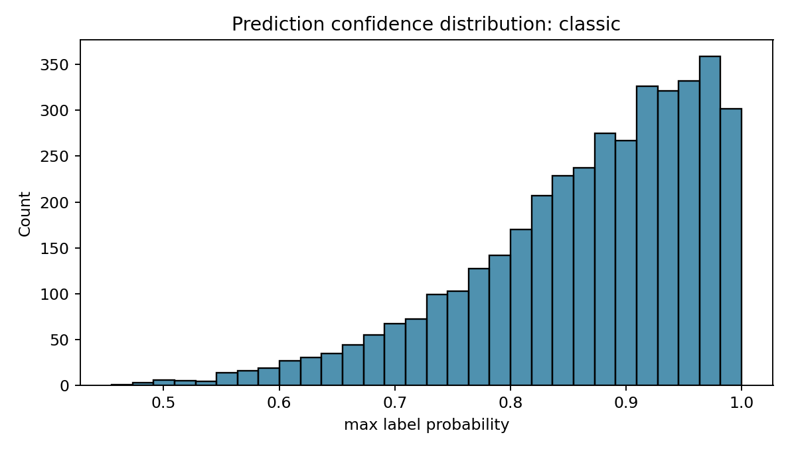
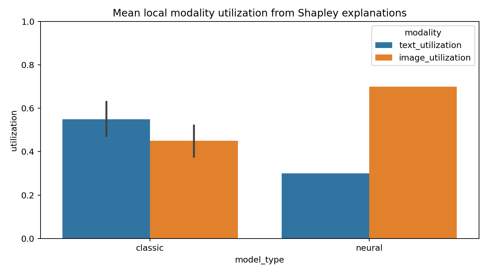

Best Model
classic selected by macro_f1 = 0.7184.
| Model | Macro F1 | Micro F1 | Sample F1 |
|---|---|---|---|
| classic | 0.7184 | 0.7425 | 0.7364 |
| neural | 0.4680 | 0.5630 | 0.5572 |
Visual Analysis





Artifacts
Machine-readable metrics and summaries are saved next to this report. Local qualitative explanations are under xai/classic and xai/neural.